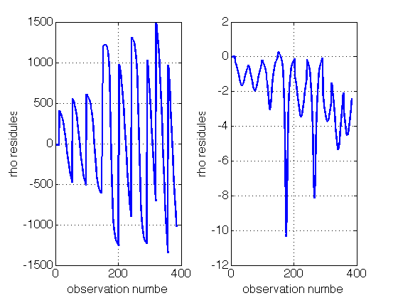

Contents
clc; clear all;close all; format compact;tic
warning off MATLAB:nearlySingularMatrix
First, Load and Parse Observation Data
load('Observations.mat');
t_obs = obs(:,1);
station = obs(:,2);
rho_obs = obs(:,3);
rhodot_obs = obs(:,4);
Pre-Allocations
x = zeros(length(obs));
y = x;
z = x;
xdot = x;
ydot = x;
zdot = x;
Xsite1 = x;
Ysite1 = x;
Zsite1 = x;
Xsite2 = x;
Ysite2 = x;
Zsite2 = x;
Xsite3 = x;
Ysite3 = x;
Zsite3 = x;
Phi = cell(1,length(obs));
y_res = zeros(2,length(obs));
Xsite = x;
Ysite = x;
Zsite = x;
theta = x;
Initialize Variables
findrhostar = @(x,y,z,Xsite,Ysite,Zsite,theta) sqrt(x^2+y^2+z^2+Xsite^2+Ysite^2+Zsite^2-2*(x*Xsite+y*Ysite)*cos(theta)+2*(x*Ysite-y*Xsite)*sin(theta)-2*z*Zsite);
findrhodotstar = @(x,y,z,xdot,ydot,zdot,Xsite,Ysite,Zsite,theta,theta_dot,rho) (x*xdot + y*ydot + z*zdot - (xdot*Xsite + ydot*Ysite)*cos(theta) + theta_dot*(x*Xsite + y*Ysite)*sin(theta)...
+(xdot*Ysite - ydot*Xsite)*sin(theta) + theta_dot*(x*Ysite - y*Xsite)*cos(theta) - zdot*Zsite)...
/rho;
Phi_Init = eye(18,18);
tol = 1e-13;
uE = 3.986004415e14;
J2 = 1.082626925638815e-3;
Cd = 2;
theta_dot = 7.29211585530066e-5;
time = t_obs;
sigma_rho = 0.01;
sigma_rhodot= 0.001;
R = [sigma_rho^2 , 0 ; ...
0 , sigma_rhodot^2];
W = inv(R);
Pbar0 = diag([1e6,1e6,1e6,1e6,1e6,1e6,1e20,1e6,1e6,1e-10,1e-10,1e-10,1e6,1e6,1e6,1e6,1e6,1e6]);
RV_Init = [757700,5222607.0,4851500.0,2213.21,4678.34,-5371.30];
Station_Init= [-5127510.0 , -3794160.0 , 0.0 ,...
3860910.0 , 3238490.0 , 3898094.0 , ...
549505.0 , -1380872.0 , 6182197.0 ];
Const_Init = [uE , J2 , Cd ];
Xstar0 = [RV_Init , Const_Init , Station_Init , reshape(Phi_Init,1,length(Phi_Init)^2)]';
xbar0 = zeros(18,1);
Perform Batch Loop
num_iterations = 1;
for ii = 1:num_iterations
tol_mat = ones(size(Xstar0)) .* tol;
options = odeset('RelTol',tol,'AbsTol',tol,'OutputFcn',@odetpbar);
[time,StatePhi] = ode45(@StateDeriv_WithPhi,time,Xstar0,options);
Lam = inv(Pbar0);
N = Pbar0\xbar0;
N_orig = N;
Lam_orig=Lam;
for jj = 1:length(time)
Phi = reshape(StatePhi(jj,19:end),size(Phi_Init));
Xstar = StatePhi(:,1:18);
x = Xstar(:,1);
y = Xstar(:,2);
z = Xstar(:,3);
xdot = Xstar(:,4);
ydot = Xstar(:,5);
zdot = Xstar(:,6);
Xsite1 = Xstar(:,10);
Ysite1 = Xstar(:,11);
Zsite1 = Xstar(:,12);
Xsite2 = Xstar(:,13);
Ysite2 = Xstar(:,14);
Zsite2 = Xstar(:,15);
Xsite3 = Xstar(:,16);
Ysite3 = Xstar(:,17);
Zsite3 = Xstar(:,18);
theta(jj) = theta_dot*time(jj);
Htilde = zeros(2,18);
if station(jj) == 101
Xsite(jj) = Xsite1(jj); Ysite(jj)=Ysite1(jj); Zsite(jj)=Zsite1(jj);
Htilde = FindHtilde(Xsite(jj),Ysite(jj),Zsite(jj),theta(jj),theta_dot,x(jj),xdot(jj),y(jj),ydot(jj),z(jj),zdot(jj));
Htilde = [Htilde , zeros(2,6)];
end
if station(jj) == 337
Xsite(jj) = Xsite2(jj); Ysite(jj)=Ysite2(jj); Zsite(jj)=Zsite2(jj);
Htilde = FindHtilde(Xsite(jj),Ysite(jj),Zsite(jj),theta(jj),theta_dot,x(jj),xdot(jj),y(jj),ydot(jj),z(jj),zdot(jj));
Htilde = [Htilde(:,1:9) , zeros(2,3), Htilde(:,10:12),zeros(2,3)];
end
if station(jj) == 394
Xsite(jj) = Xsite3(jj); Ysite(jj)=Ysite3(jj); Zsite(jj)=Zsite3(jj);
Htilde = FindHtilde(Xsite(jj),Ysite(jj),Zsite(jj),theta(jj),theta_dot,x(jj),xdot(jj),y(jj),ydot(jj),z(jj),zdot(jj));
Htilde = [Htilde(:,1:9),zeros(2,6),Htilde(:,10:12)];
end
H{jj} = Htilde*Phi;
Lam = Lam + H{jj}'*W*H{jj};
rhostar = findrhostar(x(jj),y(jj),z(jj),Xsite(jj),Ysite(jj),Zsite(jj),theta(jj));
rhodotstar= findrhodotstar(x(jj),y(jj),z(jj),xdot(jj),ydot(jj),zdot(jj),Xsite(jj),Ysite(jj),Zsite(jj),theta(jj),theta_dot,rhostar);
ystar = [rhostar;rhodotstar];
y_res(:,jj) = [rho_obs(jj);rhodot_obs(jj)] - ystar;
N = N + H{jj}'*W*y_res(:,jj);
end
fprintf('RMS of rho is : %3.5f \n',rms(y_res(1,:)))
fprintf('RMS of rhodot is : %3.5f \n',rms(y_res(2,:)))
xhat0 = Lam\(N);
Xstar0 = [Xstar0(1:18) + xhat0; (reshape(Phi_Init,length(Phi_Init)^2,1))];
xbar0 = xbar0 - xhat0;
figure(1)
subplot(num_iterations,2,2*ii-1)
plot(y_res(1,:))
ylabel('rho residules')
xlabel('observation number')
subplot(num_iterations,2,2*ii)
plot(y_res(2,:))
ylabel('rho residules')
xlabel('observation number')
end
fprintf('\n\nRunning Time for Batch Processor : %3.5f\n\n',toc)
ODE integration: 100% [..........]
Integration time: 3.9356
RMS of rho is : 732.74831
RMS of rhodot is : 2.90017
Running Time for Batch Processor : 9.33199

Display Outputs
SumHtWH = Lam - Lam_orig;
SumHtWy = N - N_orig;
fprintf('Sum of H''WH is :\n')
printMatrix(SumHtWH,27,10);
fprintf('\n\n\n Sum of H''Wy is :\n')
printMatrix(SumHtWy,15,5);
fprintf('\n\n\n Output of xhat0 is :\n')
printMatrix(xhat0,27,10)
Sum of H'WH is :
15642892.2139638532 96445342.0481109023 87553862.2093564719 39035426229.8915863037 85380621054.4556427002 -89456061116.4034271240 -1.5954227562 286051153800621.4375000000 -7713897.2730123671 94424.1960645709 -55744.7939965413 1837092.6939293954 678092.1290839665 638409.6495227553 -1277860.1201436382 733971.6775837080 635723.5618613327 123510.5898856849
96445342.0481109023 647567086.6741099358 591096262.6015053988 261992453682.0038146973 568653301031.6795654297 -602809745181.2003173828 -10.7016510482 1995728895595858.5000000000 -52282664.0776869431 -773424.0039953113 1432595.0899111021 10595645.8622289877 7392018.3361077625 1308575.5194160349 -8711564.5189841464 6309531.7304992266 1145230.3956329017 -266474.1940985713
87553862.2093564868 591096262.6015053988 545069191.1156791449 239589749865.7162170410 517506233589.1514892578 -554569933689.5238037109 -9.8035792463 1834580284670072.5000000000 -48506619.6265168786 -402655.1210385546 1045048.6870896441 8376683.0559452018 7194081.2672169982 1587982.6929616374 -8729815.9775514472 6065287.8468057951 1084368.6505893399 -273346.3020820002
39035426229.8915939331 261992453682.0038452148 239589749865.7162170410 106661554804651.4062500000 230019289585374.4687500000 -244305773049970.0625000000 -4332.9515060860 803726582978524416.0000000000 -21168772678.9310188293 -50859313.7735307217 302043238.1972026825 4288498976.4752812386 2916254082.3784904480 611717806.8690390587 -3472182365.3918185234 2884955908.2518606186 206458670.4745006561 -225374609.3335765600
85380621054.4556274414 568653301031.6795654297 517506233589.1514892578 230019289585374.4687500000 500449734561211.2500000000 -528426575793172.3750000000 -9393.3837935608 1745988440697024256.0000000000 -45491258336.3640747070 -690061915.6090250015 1311456344.9984645844 9736126092.6784706116 6209844895.7019824982 1224063166.9970550537 -7345835814.4685678482 5408488696.8719940186 1469890745.0940928459 -83278163.7571291327
-89456061116.4034271240 -602809745181.2001953125 -554569933689.5236816406 -244305773049970.0625000000 -528426575793172.3125000000 564925217977991.5000000000 9992.9746072029 -1868777680042144768.0000000000 49351823593.8733901978 453804529.4006270766 -1186627512.8099844456 -8815559900.1859703064 -7155118427.5747156143 -1442785596.3882243633 8473696896.6845960617 -6211919135.8050832748 -1275868107.9849932194 227040169.4953751564
-1.5954227562 -10.7016510482 -9.8035792463 -4332.9515060860 -9393.3837935608 9992.9746072029 0.0000001772 -33071416.4047614485 0.8680775739 0.0105353831 -0.0212645324 -0.1670443062 -0.1240245340 -0.0250132771 0.1466430480 -0.1057804599 -0.0238949898 0.0031677740
286051153800621.4375000000 1995728895595858.5000000000 1834580284670072.5000000000 803726582978524544.0000000000 1745988440697024000.0000000000 -1868777680042144512.0000000000 -33071416.4047614485 6357520838113366114304.0000000000 -162933815454797.0937500000 -5176617560516.4169921875 8224474829224.8125000000 27349691260043.2031250000 27574275176521.5312500000 81037364953.2355957031 -27206535197374.7304687500 19159599168762.6289062500 3598318516081.8442382812 -805207179437.5408935547
-7713897.2730123661 -52282664.0776869431 -48506619.6265168637 -21168772678.9310188293 -45491258336.3640747070 49351823593.8733901978 0.8680775739 -162933815454797.1250000000 4712675.9088873239 4607.5040727804 -47211.4081440844 -617765.3808566579 -571670.9101045745 -87065.8866727704 691156.4551380392 -593635.2690462477 36198.6465750722 59945.3954439472
94424.1960645709 -773424.0039953114 -402655.1210385547 -50859313.7735307217 -690061915.6090250015 453804529.4006271362 0.0105353831 -5176617560516.4169921875 4607.5040727804 301411.2586326599 -238883.2131691568 13355.2193051041 0.0000000000 0.0000000000 0.0000000000 0.0000000000 0.0000000000 0.0000000000
-55744.7939965413 1432595.0899111023 1045048.6870896443 302043238.1972027421 1311456344.9984645844 -1186627512.8099844456 -0.0212645324 8224474829224.8115234375 -47211.4081440844 -238883.2131691568 382196.5541191101 -5925.9028849073 0.0000000000 0.0000000000 0.0000000000 0.0000000000 0.0000000000 0.0000000000
1837092.6939293954 10595645.8622289877 8376683.0559452018 4288498976.4752812386 9736126092.6784706116 -8815559900.1859703064 -0.1670443062 27349691260043.2031250000 -617765.3808566579 13355.2193051041 -5925.9028849073 547491.3019981384 0.0000000000 0.0000000000 0.0000000000 0.0000000000 0.0000000000 0.0000000000
678092.1290839666 7392018.3361077616 7194081.2672169982 2916254082.3784904480 6209844895.7019824982 -7155118427.5747156143 -0.1240245340 27574275176521.5351562500 -571670.9101045745 0.0000000000 0.0000000000 0.0000000000 443985.4002217269 -187039.8461420266 -202932.9174915103 0.0000000000 0.0000000000 0.0000000000
638409.6495227553 1308575.5194160349 1587982.6929616374 611717806.8690390587 1224063166.9970550537 -1442785596.3882243633 -0.0250132771 81037364953.2366943359 -87065.8866727704 0.0000000000 0.0000000000 0.0000000000 -187039.8461420266 489429.5398828702 -185546.2470719735 0.0000000000 0.0000000000 0.0000000000
-1277860.1201436382 -8711564.5189841483 -8729815.9775514472 -3472182365.3918190002 -7345835814.4685678482 8473696896.6845960617 0.1466430480 -27206535197374.7382812500 691156.4551380392 0.0000000000 0.0000000000 0.0000000000 -202932.9174915103 -185546.2470719735 467743.5986754843 0.0000000000 0.0000000000 0.0000000000
733971.6775837080 6309531.7304992266 6065287.8468057951 2884955908.2518606186 5408488696.8719940186 -6211919135.8050832748 -0.1057804599 19159599168762.6289062500 -593635.2690462477 0.0000000000 0.0000000000 0.0000000000 0.0000000000 0.0000000000 0.0000000000 477457.6594665953 -145787.8075451687 -99770.1215443975
635723.5618613327 1145230.3956329024 1084368.6505893404 206458670.4745006561 1469890745.0940928459 -1275868107.9849936962 -0.0238949898 3598318516081.8452148438 36198.6465750722 0.0000000000 0.0000000000 0.0000000000 0.0000000000 0.0000000000 0.0000000000 -145787.8075451687 666808.3371934118 208656.0639778854
123510.5898856849 -266474.1940985713 -273346.3020820001 -225374609.3335765600 -83278163.7571291327 227040169.4953751564 0.0031677740 -805207179437.5407714844 59945.3954439472 0.0000000000 0.0000000000 0.0000000000 0.0000000000 0.0000000000 0.0000000000 -99770.1215443974 208656.0639778854 76408.2371207681
Sum of H'Wy is :
5486061547.19810
36584442778.58514
33408872159.34251
14834824166248.30859
32158626582387.25391
-34086624652357.96484
-604.98783
112317807659114768.00000
-2948644630.17576
-27771434.44241
67040528.11551
603470756.22806
400176817.76198
91700586.30273
-484097205.11321
369071814.20939
75465589.38682
-13494689.60293
Output of xhat0 is :
-0.0363025898
-0.2741066153
-0.1808766575
0.0409349622
0.0327483949
-0.0147530394
-9463442.1830325481
-0.0000006574
0.1475547229
0.0000018632
0.0000013787
-0.0000002538
-10.5636296834
9.9833774037
5.7943247874
-5.7819128352
2.3443688041
1.5124575876